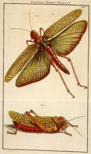
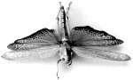

a. August
Johann Rösel von Rosenhof, De natuurlyke historie der insecten, voorzien met naar ‘t
leven getekende en gekoleurde plaaten. Met zeer nutte en fraaie aanmerkingen verrykt door
C.F.C. Kleemann. Uit den echten Hoogduitschen druk [...] vertaald [...]. Tweede deels,
IIde stuk. Haarlem en Amsterdam, by C.H. Bohn en H. Gartman, boekverkoopers, [circa 1775?]
-- (537 C 10).
b. Opgezette sprinkhaan. -- (Museum Naturalis)
De Neurenbergse schilder August Johann Rösel von Rosenhof (1705-1759) was niet alleen een goed anatoom, zoals zijn boek over kikkers bewijst, maar vooral een uitstekend entomoloog. Tusen 1740 en 1761 verscheen in vier delen zijn Der monatlich herausgegeben Insecten-Belustiging, voorzien van in totaal driehonderdzesenvijftig gravures op tweehonderdachtentachtig bladen. Daarna werd het werk nog tot 1776 voortgezet door zijn schoonzoon Christian Friedrich Carl Kleemann (1735-1789), die zesentwintig platen eraan toevoegde. Het is een prachtig en uitvoerig werk geworden, dat wel erkenning, maar weinig kopers vond. Zo was het tenminste in de Republiek, waar circa 1775 een Nederlandse vertaling uitkwam, ‘onder het toezicht en de beschaaving [correctie] van eenige voornaame liefhebbers’. Kleemanns aanvulling is in het Nederlands nooit voltooid: omstreeks 1780 verscheen er slechts één aflevering van.
Getoond wordt, behalve een opgezette sprinkhaan, een afbeelding van een ‘Locusta indica’, een der grootste ‘Indiaansche springkhanen’, die wel vijf duim (circa twaalfeneenhalve centimeter) groot kan worden. Het gaat om een exemplaar van Eutropidacris cristata (Linnaeus, 1758), behorend tot de familie der Acrididae, met als onderfamilie Romaleinae. Het verspreidingsgebied is van Mexico tot het noorden van Zuid-Amerika.
In zijn tekst merkt Rösel von Rosenhof op dat de kleuring op de plaat veel helderder is dan die welke men gewoonlijk op de exemplaren zelf bij insektenverzamelaars ziet. Dat vindt zijn oorzaak hierin dat die exemplaren vaak al wat ouder zijn en soms van rotting te lijden hebben gehad. Niet alleen het uiterlijk en de kleuren worden uitgebreid beschreven, maar de auteur neemt ook de gelegenheid te baat om nog veel meer wetenswaardigheden over sprinkhanen te vertellen. Hij begint -- wie zou het verbazen? -- bij de door God gezonden sprinkhanenplaag in het Egypte van de farao’s.
Literatuur
- Claus Nissen, Die zoologische Buchillustration. Ihre Geschichte und Bibliographie. Stuttgart 1969-1978. 2 dln, nr. 3467.
| vorige pagina | top pagina |